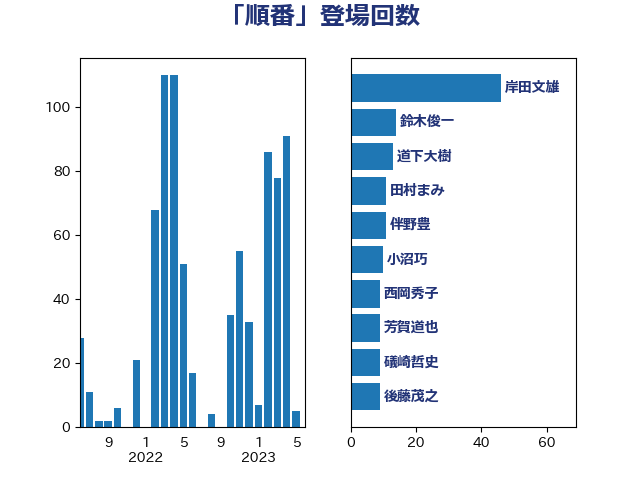

単語「順番」

| 岸田文雄 | 自由民主党 | 46 回 |
| 鈴木俊一 | 自由民主党 | 14 回 |
| 道下大樹 | 立憲民主党 | 13 回 |
| 田村まみ | 国民民主党 | 11 回 |
| 伴野豊 | 立憲民主党 | 11 回 |
| 小沼巧 | 立憲民主党 | 10 回 |
| 西岡秀子 | 国民民主党 | 9 回 |
| 芳賀道也 | 国民民主党 | 9 回 |
| 礒崎哲史 | 国民民主党 | 9 回 |
| 後藤茂之 | 自由民主党 | 9 回 |
| 吉田統彦 | 立憲民主党 | 9 回 |
| 高木かおり | 日本維新の会 | 8 回 |
| 浅野哲 | 国民民主党 | 8 回 |
| 櫻井周 | 立憲民主党 | 8 回 |
| 柚木道義 | 立憲民主党 | 8 回 |
| 斎藤アレックス | 国民民主党 | 8 回 |
| 河野太郎 | 自由民主党 | 7 回 |
| 柴田巧 | 日本維新の会 | 7 回 |
| 鎌田さゆり | 立憲民主党 | 6 回 |
| 藤岡隆雄 | 立憲民主党 | 6 回 |
| 石川香織 | 立憲民主党 | 6 回 |
| 杉本和巳 | 日本維新の会 | 6 回 |
| 早稲田ゆき | 立憲民主党 | 6 回 |
| 山岸一生 | 立憲民主党 | 6 回 |
| 音喜多駿 | 日本維新の会 | 5 回 |
| 階猛 | 立憲民主党 | 5 回 |
| 稲富修二 | 立憲民主党 | 5 回 |
| 片山大介 | 日本維新の会 | 5 回 |
| 浜田聡 | NHK党 | 5 回 |
| 梅村みずほ | 日本維新の会 | 5 回 |
| 打越さく良 | 立憲民主党 | 5 回 |
| 川合孝典 | 国民民主党 | 5 回 |
| 岸真紀子 | 立憲民主党 | 5 回 |
| 岡本あき子 | 立憲民主党 | 5 回 |
| 山口壯 | 自由民主党 | 5 回 |
| 山井和則 | 立憲民主党 | 5 回 |
| 大西健介 | 立憲民主党 | 5 回 |
| 堀場幸子 | 日本維新の会 | 5 回 |
| 井坂信彦 | 立憲民主党 | 5 回 |
| 福島みずほ | 社会民主党 | 4 回 |
| 田名部匡代 | 立憲民主党 | 4 回 |
| 田中健 | 国民民主党 | 4 回 |
| 横山信一 | 公明党 | 4 回 |
| 松沢成文 | 日本維新の会 | 4 回 |
| 本庄知史 | 立憲民主党 | 4 回 |
| 平沼正二郎 | 自由民主党 | 4 回 |
| 川田龍平 | 立憲民主党 | 4 回 |
| 岬麻紀 | 日本維新の会 | 4 回 |
| 小沢雅仁 | 立憲民主党 | 4 回 |
| 太栄志 | 立憲民主党 | 4 回 |
| 高橋千鶴子 | 日本共産党 | 3 回 |
| 鈴木英敬 | 自由民主党 | 3 回 |
| 鈴木敦 | 国民民主党 | 3 回 |
| 金村龍那 | 日本維新の会 | 3 回 |
| 重徳和彦 | 立憲民主党 | 3 回 |
| 赤木正幸 | 日本維新の会 | 3 回 |
| 西村智奈美 | 立憲民主党 | 3 回 |
| 紙智子 | 日本共産党 | 3 回 |
| 篠原孝 | 立憲民主党 | 3 回 |
| 秋野公造 | 公明党 | 3 回 |
| 石田昌宏 | 自由民主党 | 3 回 |
| 石橋通宏 | 立憲民主党 | 3 回 |
| 石川博崇 | 公明党 | 3 回 |
| 石垣のりこ | 立憲民主党 | 3 回 |
| 石井苗子 | 日本維新の会 | 3 回 |
| 田村憲久 | 自由民主党 | 3 回 |
| 牧山ひろえ | 立憲民主党 | 3 回 |
| 源馬謙太郎 | 立憲民主党 | 3 回 |
| 沢田良 | 日本維新の会 | 3 回 |
| 森本真治 | 立憲民主党 | 3 回 |
| 梅村聡 | 日本維新の会 | 3 回 |
| 枝野幸男 | 立憲民主党 | 3 回 |
| 松本尚 | 自由民主党 | 3 回 |
| 新垣邦男 | 立憲民主党 | 3 回 |
| 岩谷良平 | 日本維新の会 | 3 回 |
| 山本太郎 | れいわ新選組 | 3 回 |
| 小山展弘 | 立憲民主党 | 3 回 |
| 塩村あやか | 立憲民主党 | 3 回 |
| 和田有一朗 | 日本維新の会 | 3 回 |
| 吉田とも代 | 日本維新の会 | 3 回 |
| 前原誠司 | 国民民主党 | 3 回 |
| 倉林明子 | 日本共産党 | 3 回 |
| 上月良祐 | 自由民主党 | 3 回 |
| 青木愛 | 立憲民主党 | 2 回 |
| 阿部弘樹 | 日本維新の会 | 2 回 |
| 阿達雅志 | 自由民主党 | 2 回 |
| 長友慎治 | 国民民主党 | 2 回 |
| 金子俊平 | 自由民主党 | 2 回 |
| 近藤和也 | 立憲民主党 | 2 回 |
| 角田秀穂 | 公明党 | 2 回 |
| 萩生田光一 | 自由民主党 | 2 回 |
| 荒井優 | 立憲民主党 | 2 回 |
| 舩後靖彦 | れいわ新選組 | 2 回 |
| 羽田次郎 | 立憲民主党 | 2 回 |
| 竹詰仁 | 国民民主党 | 2 回 |
| 穀田恵二 | 日本共産党 | 2 回 |
| 神谷裕 | 立憲民主党 | 2 回 |
| 田嶋要 | 立憲民主党 | 2 回 |
| 漆間譲司 | 日本維新の会 | 2 回 |
| 浮島智子 | 公明党 | 2 回 |
| 池下卓 | 日本維新の会 | 2 回 |
| 江島潔 | 自由民主党 | 2 回 |
| 横沢高徳 | 立憲民主党 | 2 回 |
| 森田俊和 | 立憲民主党 | 2 回 |
| 梅谷守 | 立憲民主党 | 2 回 |
| 松野明美 | 日本維新の会 | 2 回 |
| 松原仁 | 立憲民主党 | 2 回 |
| 東徹 | 日本維新の会 | 2 回 |
| 本村伸子 | 日本共産党 | 2 回 |
| 掘井健智 | 日本維新の会 | 2 回 |
| 後藤祐一 | 立憲民主党 | 2 回 |
| 平将明 | 自由民主党 | 2 回 |
| 市村浩一郎 | 日本維新の会 | 2 回 |
| 岡田克也 | 立憲民主党 | 2 回 |
| 山崎誠 | 立憲民主党 | 2 回 |
| 小林茂樹 | 自由民主党 | 2 回 |
| 小宮山泰子 | 立憲民主党 | 2 回 |
| 寺田学 | 立憲民主党 | 2 回 |
| 宮本徹 | 日本共産党 | 2 回 |
| 宮口治子 | 立憲民主党 | 2 回 |
| 安江伸夫 | 公明党 | 2 回 |
| 大島九州男 | れいわ新選組 | 2 回 |
| 大串博志 | 立憲民主党 | 2 回 |
| 吉良よし子 | 日本共産党 | 2 回 |
| 吉田豊史 | 無所属 | 2 回 |
| 吉川元 | 立憲民主党 | 2 回 |
| 古川元久 | 国民民主党 | 2 回 |
| 古川俊治 | 自由民主党 | 2 回 |
| 北神圭朗 | 無所属 | 2 回 |
| 勝部賢志 | 立憲民主党 | 2 回 |
| 伊藤孝恵 | 国民民主党 | 2 回 |
| 仁木博文 | 無所属 | 2 回 |
| 井上哲士 | 日本共産党 | 2 回 |
| 串田誠一 | 日本維新の会 | 2 回 |
| 中野洋昌 | 公明党 | 2 回 |
| 中川正春 | 立憲民主党 | 2 回 |
| 高野光二郎 | 自由民主党 | 1 回 |
| 高橋英明 | 日本維新の会 | 1 回 |
| 高橋光男 | 公明党 | 1 回 |
| 高木陽介 | 公明党 | 1 回 |
| 青山繁晴 | 自由民主党 | 1 回 |
| 阿部知子 | 立憲民主党 | 1 回 |
| 長谷川岳 | 自由民主党 | 1 回 |
| 長浜博行 | 無所属 | 1 回 |
| 長峯誠 | 自由民主党 | 1 回 |
| 長妻昭 | 立憲民主党 | 1 回 |
| 鈴木宗男 | 日本維新の会 | 1 回 |
| 野間健 | 立憲民主党 | 1 回 |
| 野田聖子 | 自由民主党 | 1 回 |
| 野田国義 | 立憲民主党 | 1 回 |
| 野田佳彦 | 立憲民主党 | 1 回 |
| 遠藤良太 | 日本維新の会 | 1 回 |
| 進藤金日子 | 自由民主党 | 1 回 |
| 近藤昭一 | 立憲民主党 | 1 回 |
| 足立敏之 | 自由民主党 | 1 回 |
| 足立康史 | 日本維新の会 | 1 回 |
| 赤羽一嘉 | 公明党 | 1 回 |
| 谷川とむ | 自由民主党 | 1 回 |
| 谷合正明 | 公明党 | 1 回 |
| 西田昌司 | 自由民主党 | 1 回 |
| 西田実仁 | 公明党 | 1 回 |
| 藤巻健太 | 日本維新の会 | 1 回 |
| 落合貴之 | 立憲民主党 | 1 回 |
| 若林健太 | 自由民主党 | 1 回 |
| 船田元 | 自由民主党 | 1 回 |
| 舟山康江 | 国民民主党 | 1 回 |
| 美延映夫 | 日本維新の会 | 1 回 |
| 緒方林太郎 | 無所属 | 1 回 |
| 簗和生 | 自由民主党 | 1 回 |
| 篠原豪 | 立憲民主党 | 1 回 |
| 笠井亮 | 日本共産党 | 1 回 |
| 竹谷とし子 | 公明党 | 1 回 |
| 竹内真二 | 公明党 | 1 回 |
| 空本誠喜 | 日本維新の会 | 1 回 |
| 稲津久 | 公明党 | 1 回 |
| 福田昭夫 | 立憲民主党 | 1 回 |
| 神谷政幸 | 自由民主党 | 1 回 |
| 神津たけし | 立憲民主党 | 1 回 |
| 石橋林太郎 | 自由民主党 | 1 回 |
| 石川大我 | 立憲民主党 | 1 回 |
| 石井拓 | 自由民主党 | 1 回 |
| 畦元将吾 | 自由民主党 | 1 回 |
| 田畑裕明 | 自由民主党 | 1 回 |
| 田村智子 | 日本共産党 | 1 回 |
| 猪瀬直樹 | 日本維新の会 | 1 回 |
| 猪口邦子 | 自由民主党 | 1 回 |
| 滝波宏文 | 自由民主党 | 1 回 |
| 湯原俊二 | 立憲民主党 | 1 回 |
| 清水貴之 | 日本維新の会 | 1 回 |
| 浜地雅一 | 公明党 | 1 回 |
| 浜口誠 | 国民民主党 | 1 回 |
| 浅田均 | 日本維新の会 | 1 回 |
| 浅川義治 | 日本維新の会 | 1 回 |
| 津島淳 | 自由民主党 | 1 回 |
| 河西宏一 | 公明党 | 1 回 |
| 池畑浩太朗 | 日本維新の会 | 1 回 |
| 江田憲司 | 立憲民主党 | 1 回 |
| 永岡桂子 | 自由民主党 | 1 回 |
| 水岡俊一 | 立憲民主党 | 1 回 |
| 武井俊輔 | 自由民主党 | 1 回 |
| 櫻井充 | 自由民主党 | 1 回 |
| 櫛渕万里 | れいわ新選組 | 1 回 |
| 榛葉賀津也 | 国民民主党 | 1 回 |
| 森山浩行 | 立憲民主党 | 1 回 |
| 森屋隆 | 立憲民主党 | 1 回 |
| 根本匠 | 自由民主党 | 1 回 |
| 柿沢未途 | 無所属 | 1 回 |
| 松本剛明 | 自由民主党 | 1 回 |
| 松川るい | 自由民主党 | 1 回 |
| 杉尾秀哉 | 立憲民主党 | 1 回 |
| 杉久武 | 公明党 | 1 回 |
| 木村英子 | れいわ新選組 | 1 回 |
| 朝日健太郎 | 自由民主党 | 1 回 |
| 早坂敦 | 日本維新の会 | 1 回 |
| 日下正喜 | 公明党 | 1 回 |
| 新藤義孝 | 自由民主党 | 1 回 |
| 新妻秀規 | 公明党 | 1 回 |
| 斉藤鉄夫 | 公明党 | 1 回 |
| 徳永久志 | 立憲民主党 | 1 回 |
| 広瀬めぐみ | 自由民主党 | 1 回 |
| 平木大作 | 公明党 | 1 回 |
| 平山佐知子 | 無所属 | 1 回 |
| 岩田和親 | 自由民主党 | 1 回 |
| 岡田直樹 | 自由民主党 | 1 回 |
| 山際大志郎 | 自由民主党 | 1 回 |
| 山田賢司 | 自由民主党 | 1 回 |
| 山田勝彦 | 立憲民主党 | 1 回 |
| 山本順三 | 自由民主党 | 1 回 |
| 山本剛正 | 日本維新の会 | 1 回 |
| 山本佐知子 | 自由民主党 | 1 回 |
| 山崎正恭 | 公明党 | 1 回 |
| 山下貴司 | 自由民主党 | 1 回 |
| 小野田紀美 | 自由民主党 | 1 回 |
| 小野泰輔 | 日本維新の会 | 1 回 |
| 小西洋之 | 立憲民主党 | 1 回 |
| 小熊慎司 | 立憲民主党 | 1 回 |
| 小森卓郎 | 自由民主党 | 1 回 |
| 小林鷹之 | 自由民主党 | 1 回 |
| 小林史明 | 自由民主党 | 1 回 |
| 宮下一郎 | 自由民主党 | 1 回 |
| 室井邦彦 | 日本維新の会 | 1 回 |
| 宗清皇一 | 自由民主党 | 1 回 |
| 太田房江 | 自由民主党 | 1 回 |
| 天畠大輔 | れいわ新選組 | 1 回 |
| 大野敬太郎 | 自由民主党 | 1 回 |
| 大塚耕平 | 国民民主党 | 1 回 |
| 大串正樹 | 自由民主党 | 1 回 |
| 塩田博昭 | 公明党 | 1 回 |
| 塩崎彰久 | 自由民主党 | 1 回 |
| 城井崇 | 立憲民主党 | 1 回 |
| 土田慎 | 自由民主党 | 1 回 |
| 國重徹 | 公明党 | 1 回 |
| 国定勇人 | 自由民主党 | 1 回 |
| 国光あやの | 自由民主党 | 1 回 |
| 嘉田由紀子 | 無所属 | 1 回 |
| 和田義明 | 自由民主党 | 1 回 |
| 吉良州司 | 無所属 | 1 回 |
| 吉田宣弘 | 公明党 | 1 回 |
| 吉田はるみ | 立憲民主党 | 1 回 |
| 吉川赳 | 無所属 | 1 回 |
| 古賀之士 | 立憲民主党 | 1 回 |
| 友納理緒 | 自由民主党 | 1 回 |
| 加藤勝信 | 自由民主党 | 1 回 |
| 前川清成 | 日本維新の会 | 1 回 |
| 保岡宏武 | 自由民主党 | 1 回 |
| 佐藤英道 | 公明党 | 1 回 |
| 佐藤啓 | 自由民主党 | 1 回 |
| 住吉寛紀 | 日本維新の会 | 1 回 |
| 伊藤岳 | 日本共産党 | 1 回 |
| 伊藤俊輔 | 立憲民主党 | 1 回 |
| 伊東信久 | 日本維新の会 | 1 回 |
| 仁比聡平 | 日本共産党 | 1 回 |
| 井林辰憲 | 自由民主党 | 1 回 |
| 丸川珠代 | 自由民主党 | 1 回 |
| 中田宏 | 自由民主党 | 1 回 |
| 中島克仁 | 立憲民主党 | 1 回 |
| 上野通子 | 自由民主党 | 1 回 |
| 三谷英弘 | 自由民主党 | 1 回 |
| 一谷勇一郎 | 日本維新の会 | 1 回 |
| ながえ孝子 | 無所属 | 1 回 |
| おおつき紅葉 | 立憲民主党 | 1 回 |